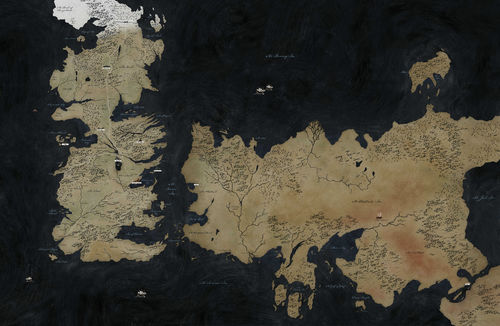

A guide to

Westeros and Essos
The show and books are set in a fictional world, known as the "Known World", with two main continents Westeros and Essos. The plot is set around the medieval era where slavery, monarchies and war are all present. The world also contains many mythical creatures such as white walkers, dragons etc. Westeros is where the majority of the plot takes place. Westeros is made up of 7 kingdoms which are ruled from the King on the Iron Throne, in the city of King's Landing. The conflict within the show is centred around who will control the Iron throne. Essos is a larger continent seperated from Westeros by the Narrow Sea. It is made up of 9 free cities, which s ironic as slavery is the most prosperous trade within this region. The setting of Game of Thrones is amazingly detailed which can be seen from the detailed map on the right.
Map of Westeros and Essos
Familes of Westeros
Westeros is made up of the Seven Kingdoms, which are ruled by the Great Houses. There are seven Great Houses at the start of the show each ruling a respective area. One of these houses rules the Seven Kingdom from the Iron throne, usually the house of the King. The iron throne is also helped rule by the house of the King's wife (the Queen). The seven Great Houses are; House Stark, House Lannister, House Tyrell, House Tully, House Martell, House Baratheon and House Arryn. There are other large families or houses within Westeros but they do not control one of the Seven Kingdoms. These include House Frey, House Greyjoy, House Bolton, and House Targaryen. House Targaryen used to rule all of Westeros until they were defeated in "Roberts Rebellion" a war that led to the structure of the houses as they are at the start of the show.
House Stark
House Stark rule a region of Westeros called the North from the castle of Winterfell. The head of their house, Eddard Stark, is Warden of the North. Their house words are: "Winter is coming"
House Lannister
The Lannisters rule over the Westerlands from the castle Casterly Rock. The head of their house is Lord Tywin Lannister, who is also warden of the West. Their house words are: "Hear me roar"
House Baratheon
The Baratheons rule over the Stormlands (an eastern region) from Storms End. Due to their head of house, Robert Baratheon being King, they also rule Kings Landing and the Crownlands. Their house words are: "Ours is the Fury"
House Martell
The Martells rule the south of Westeros, a region called Dorne, from their castle Sunspear. The head of their house is Doran Martell. Their words are: "Unbowed, Unbent, Unroken"
House Tyrell
The Tyrells rule an area of Westeros called the Reach. from their castle Highgarden. The head of their house is Lord Mace Tyrell. Their words are: "Growing Strong"
House Arryn
The Arryns rule the Vale, which is in the East of Westeros, from their castle the Eyrie. The head of their house is Jon Arryn who is also warden of the east. Their words are: "As High as Honour"
House Tully
The Tullys rule the Riverlands,located in the middle of Westeros, from their castle Riverun. The head of their house is Hoster Tully. Their words are: "Family. Duty. Honour."
House Greyjoy
The Greyjoys rule the Iron Islands, a group of islands off the west coast of Westeros, from their castle Pyke. The head of their house is Balon Greyjoy. Their words are: "We do not Sow"
House Bolton
The Boltons are one of House Stark's bannermen and rule a region east of the Starks from their castle the Dreadfort. The head of their house is Lord Roose Bolton. Their words are: "Our Blades are Sharp"
House Frey
The Freys are one of House Tully's Bannermen and rule the crossing of the Trident(river) from their bridge castles known as the Twins. The head of their house is Walder Frey. Their words are: "We Stand Together"
House Targaryen
The Targaryens were the biggest house in Westeros, having ruled the Iron throne and Dragonstone for over 3 centuries. They were conquered during Roberts Rebellion and have no region under control anymore. Their heir to their house is Viserys Targaryen who is in exhile in Essos. Their words are: "Fire and Blood"
White Walkers and the Knights Watch
The White Walkers are one of the many mythical creatures you will meet in Game of thrones. They are located north of the Wall, a large magical structure built to protect the north from them, and were banished thousands of years before the current setting of the show.The Knights watch are a group of men that devote their lives to manning the wall at Castle Black. They are currently made up of murderers and rapists and sometimes good men. Men who commit crimes are sometimes given the option to go to castle black and join the black.
Setting at the start of Show
The start of the show begins 15 years after Roberts Rebellion. Robert Barratheon is currently the ruler of the Seven Kingdoms and sits upon the Iron Throne alongside his wife Cersei Lannister. The Regions of Westeros are ruled by the corresponding houses listed above.